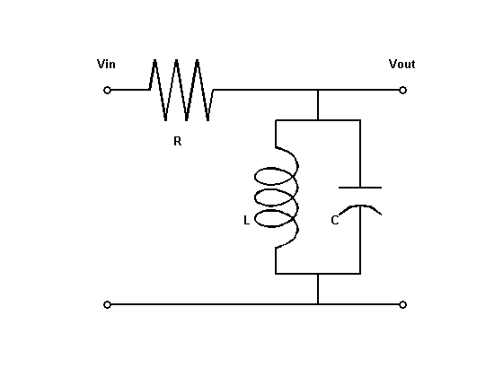
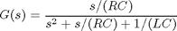
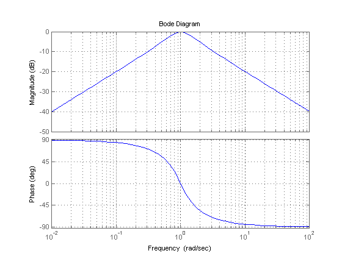
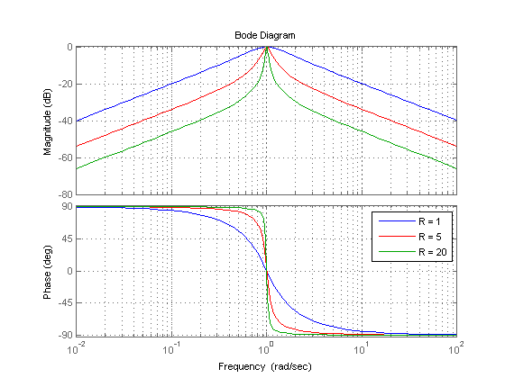
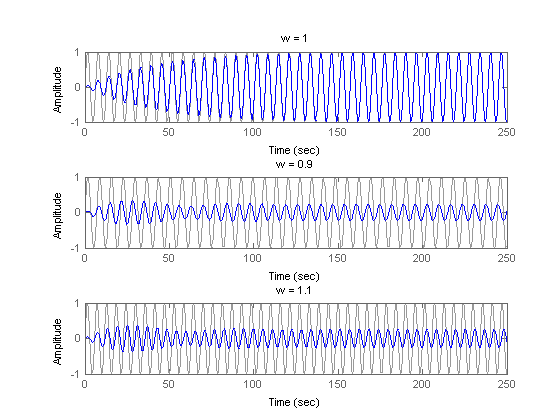
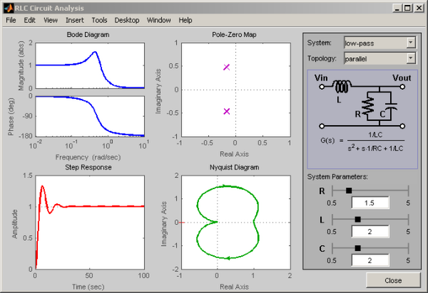

RLC 回路の応答を解析
このデモは、共通の RLC 回路の時間応答と周波数応答を物理パラメーターの関数として解析するために、Control System Toolbox™ の関数の使用方法を示します。
目次
バンドパス RLC 回路
次の図は、並列形式のバンドパス RLC 回路を示しています。

図 1:バンドパス RLC 回路
入力電圧から出力電圧への伝達関数は次のとおりです。

積 LC はバンドパス周波数を制御するのに対し、RC は通過域の狭さを制御します。周波数 1 rad/sec に調整されたバンドパス フィルターを作成するには、L=C=1 を設定し、R を使用してフィルター バンドを調整します。
回路の周波数応答の解析
ボード線図は、RLC 回路のバンドパス特性を調べる際に便利なツールです。tf を使用して、次の値に対する回路の伝達関数を指定します。
%|R=L=C=1|:
R = 1; L = 1; C = 1;
G = tf([1/(R*C) 0],[1 1/(R*C) 1/(L*C)])
Transfer function:
s
-----------
s^2 + s + 1
次に、bode を使用して、回路の周波数応答をプロットします。
bode(G), grid
予想どおり、RLC フィルターは周波数 1 rad/sec のときに最大ゲインを得ます。ただし、この周波数からの減衰は、周波数が 5 倍になるごとにわずか -10dB です。通過域を狭めるには、次のように R の値を大きくします。
R1 = 5; G1 = tf([1/(R1*C) 0],[1 1/(R1*C) 1/(L*C)]); R2 = 20; G2 = tf([1/(R2*C) 0],[1 1/(R2*C) 1/(L*C)]); bode(G,'b',G1,'r',G2,'g'), grid legend('R = 1','R = 5','R = 20')
抵抗値を R=20 にすると、ターゲット周波数 1 rad/sec に基づいてフィルターが厳密に調整されます。
回路の時間応答の解析
回路 G2 の減衰特性 (R=20) を確認するには、このフィルターが周波数 0.9、1、および 1.1 rad/sec のときに正弦波をどのように変換するかをシミュレートします。
t = 0:0.05:250; subplot(311), lsim(G2,sin(t),t), title('w = 1') subplot(312), lsim(G2,sin(0.9*t),t), title('w = 0.9') subplot(313), lsim(G2,sin(1.1*t),t), title('w = 1.1')
0.9 および 1.1 rad/sec における正弦波は大きく減衰されます。1 rad/sec の正弦波は、過渡状態が消滅すると変化しなくなります。フィルターの極の減衰が小さいことは、過渡期間を長くする原因となりますが、通過域が狭い場合に必要となります。
damp(pole(G2))
Eigenvalue Damping Freq. (rad/s)
-2.50e-002 + 1.00e+000i 2.50e-002 1.00e+000
-2.50e-002 - 1.00e+000i 2.50e-002 1.00e+000
対話型 GUI
ローパスおよびハイパスの RLC 回路など、その他の標準回路設定を解析するには、次のリンクをクリックして対話型 GUI を起動します。この GUI では、R、L、C の各パラメーターを変更して、時間応答および周波数応答に対する影響をリアルタイムで確認できます。
rlc_gui